11h30
O buffet abre
Almoço todos os dias, das 11h30 às 14h. Sushi, sashimi e temaki do lado frio, pratos quentes do outro.
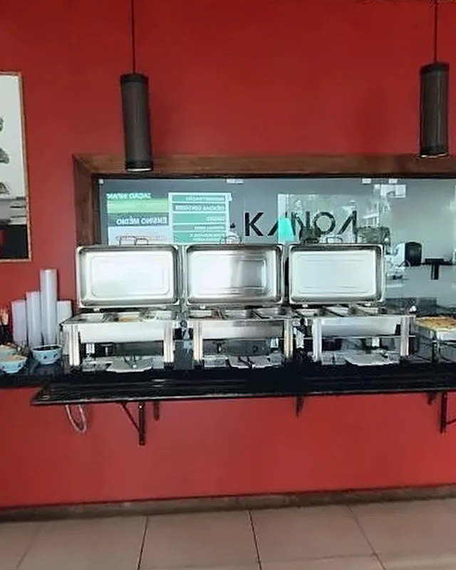
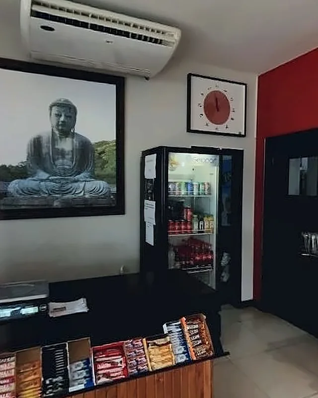
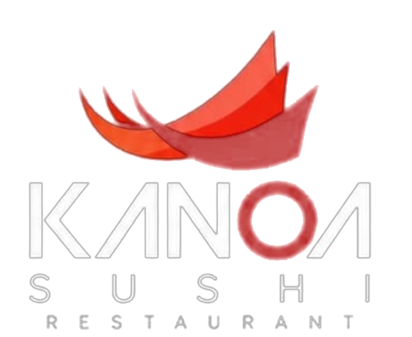
Fale conosco
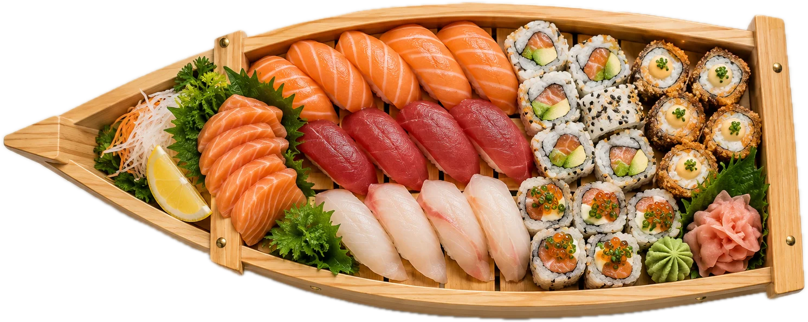
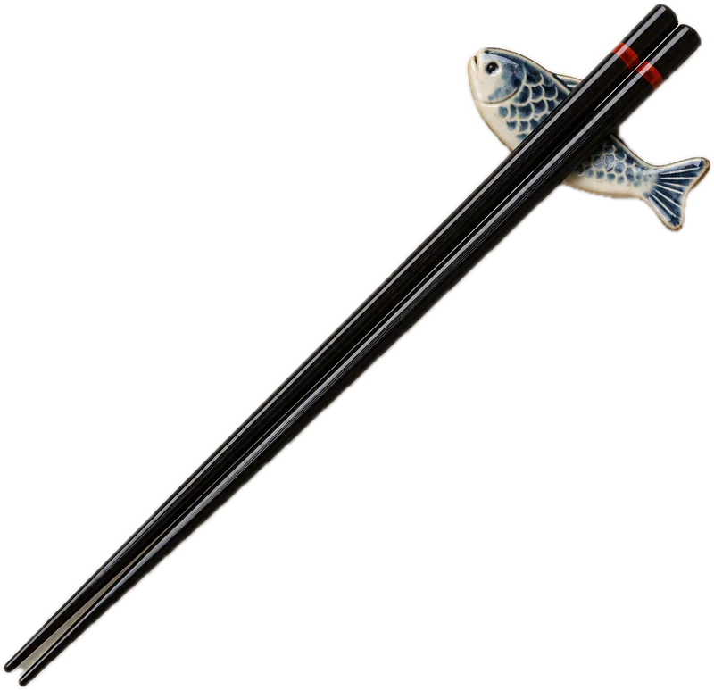
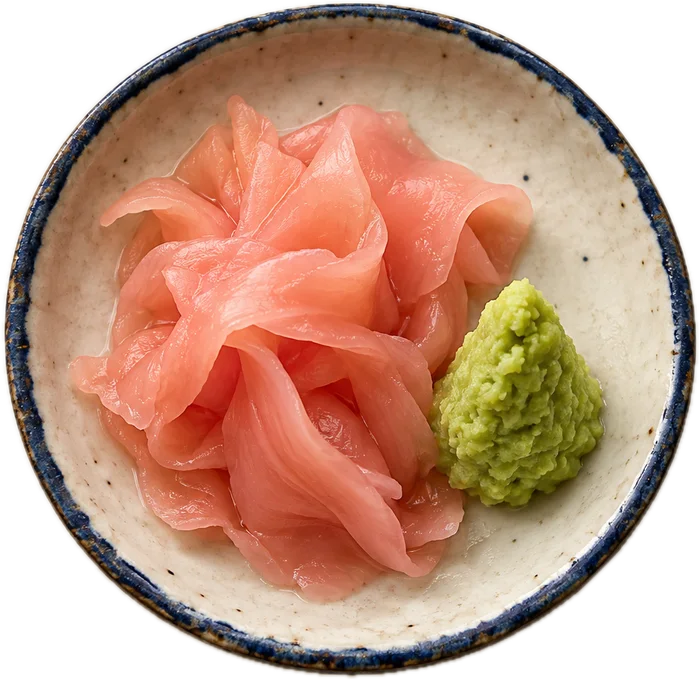
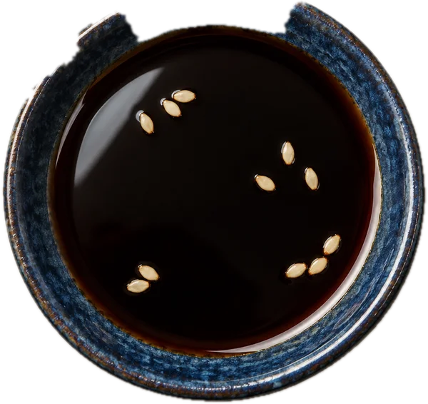
Buffet frio e quente
Sushi, temaki e cozinha quente no buffet do almoço e do jantar, com brinquedoteca para as crianças.
Almoço todo dia a partir das 11h30
Ver o cardápio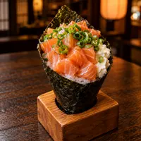
Uramaki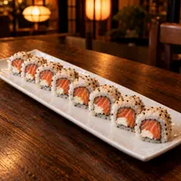
Sashimi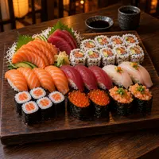
Hot filadélfia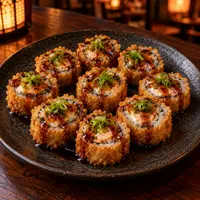
Yakisoba Joe SunomonoAlmoço todos os dias, das 11h30 às 14h. Sushi, sashimi e temaki do lado frio, pratos quentes do outro.


De segunda a sexta, o jantar vai das 18h às 22h. No sábado, das 19h às 22h.
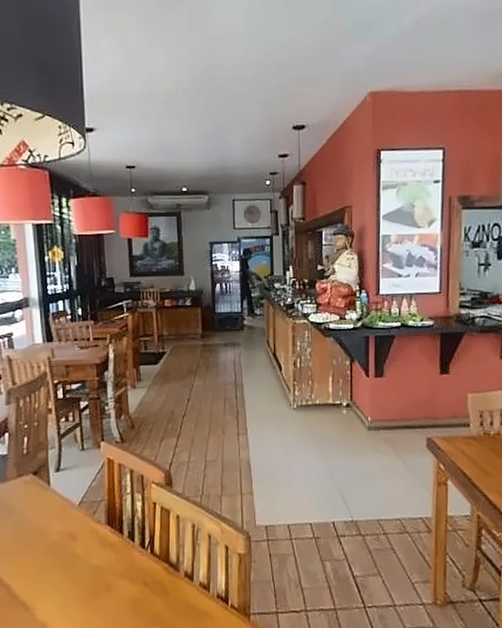
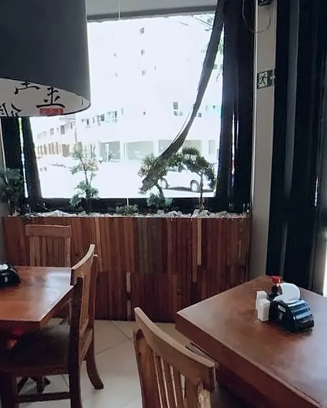
A casa fecha às 22h e volta no almoço seguinte. Domingo, só almoço.
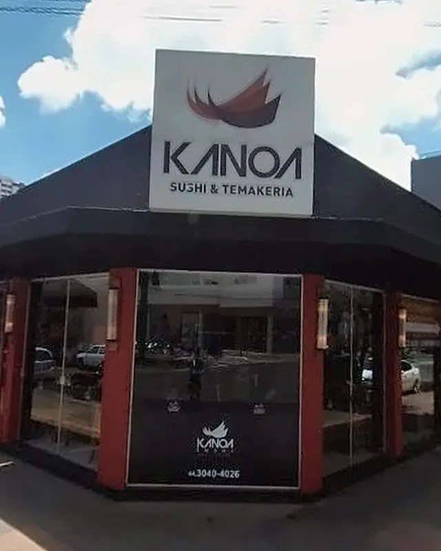
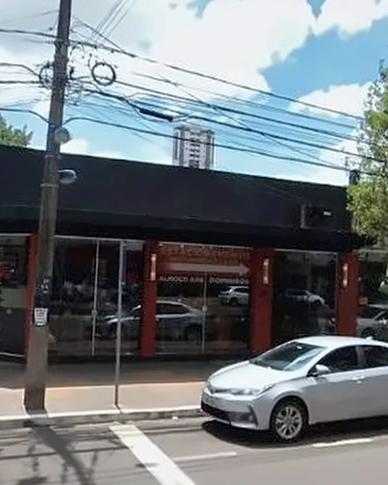
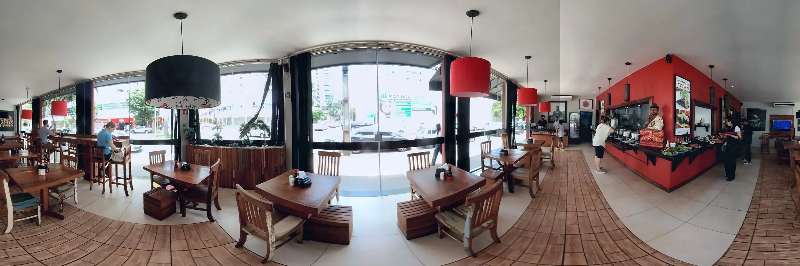
As mesas
Madeira, luz do dia
As janelas
De frente para a avenida
O buffet
Frio e quente
いただきます
É o "bom apetite" japonês. Aqui, a gente diz no buffet, na mesa e na brinquedoteca.
Niguiri, sashimi, uramaki e joe de salmão no mesmo prato.
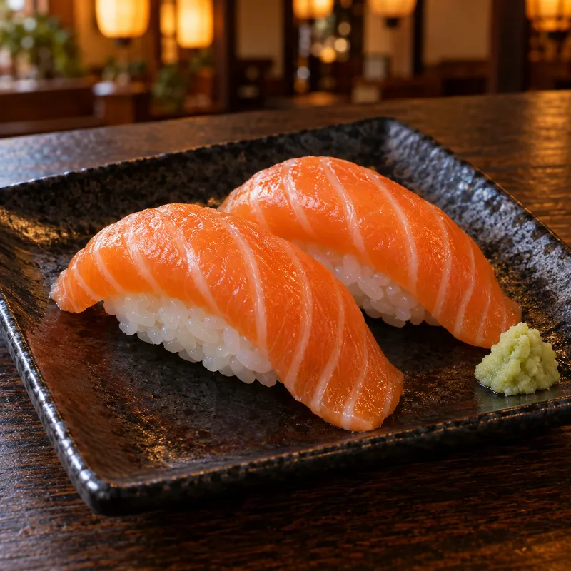
Arroz temperado e uma lâmina de salmão por cima.
Cone de alga crocante com arroz, salmão e cream cheese.
Salmão e cream cheese, com o arroz e o gergelim por fora.
Empanado e frito, com molho tarê e cebolinha.
Um pouco da casa antes de você chegar. Arraste para mexer.
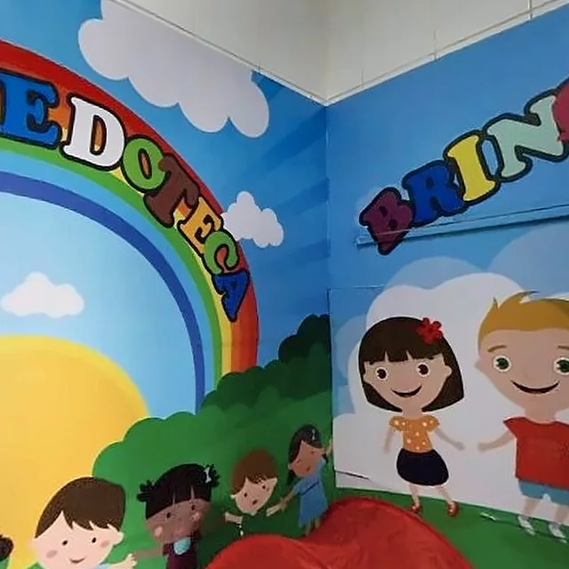
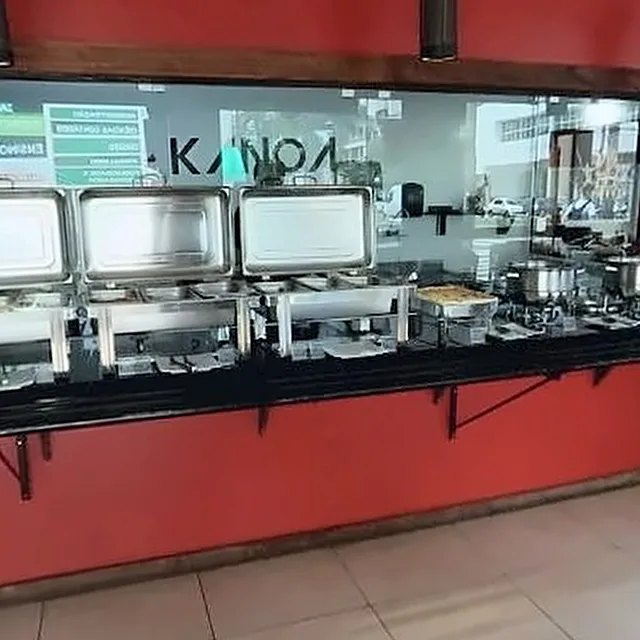
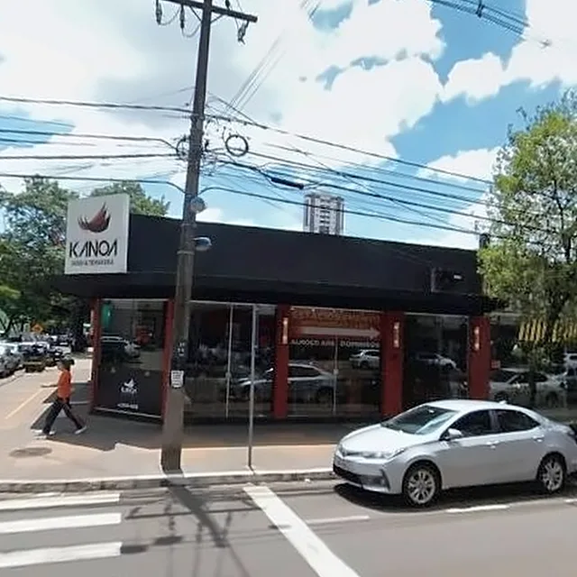
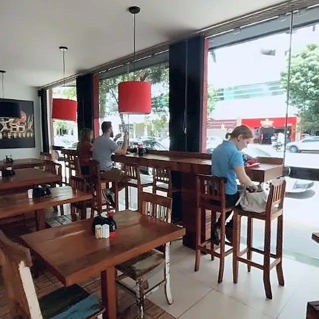
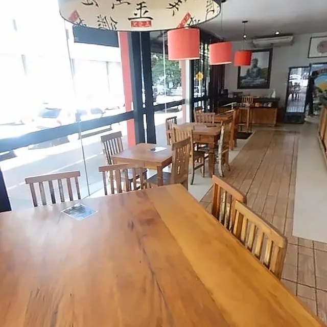
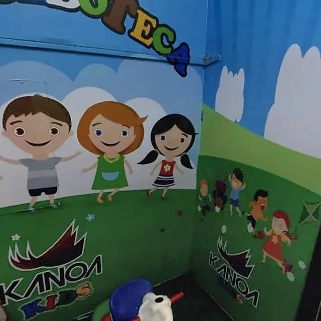
Tour virtual 360°
Da calçada até a brinquedoteca. Arraste para olhar em volta e toque nas setas para andar.
Carregando o tour…